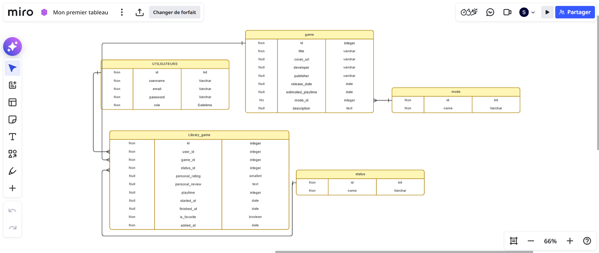

Votre collection de jeux vidéo, centralisée et synchronisée avec Steam.
Nos jeux sont éparpillés
- Des bibliothèques dispersées — Steam, PlayStation, Xbox, Switch, achats physiques…
- Aucun suivi — où en suis-je sur ce jeu ? Est-ce que je l'ai terminé ? abandonné ?
- Pas de mémoire — notes, temps de jeu, avis personnels : tout se perd.
Il manque un endroit unique pour gérer sa passion.
GameStack en une phrase
Une application web qui centralise toute votre collection et l'importe automatiquement depuis Steam — avec un suivi personnel complet.
Synchronisation Steam
Import automatique de toute la bibliothèque Steam en un clic.
Gestion unifiée
Jeux Steam et ajouts manuels dans une seule bibliothèque.
Suivi personnalisé
Statut, note /10, temps de jeu et avis pour chaque jeu.
Les objectifs
- O1Compte & connexion sécurisée — inscription, login, sessions.✓ Réalisé
- O2Ajouter des jeux à sa bibliothèque et leur attribuer un statut.✓ Réalisé
- O3Stocker & afficher les caractéristiques de chaque jeu.✓ Réalisé
- O4Recherche, filtrage & tri dans la bibliothèque.✓ Réalisé
- O5Back office d'administration.✓ Réalisé
- +Évolution Steam (post-V0) — intégration de la bibliothèque Steam.✓ Réalisé
- Q6Défis aléatoires avec récompense sur une fiche de jeu.○ Perspective
Trois profils d'utilisateurs
Non connecté
Accède aux pages publiques, à l'inscription et à la connexion.
Connecté
Gère sa bibliothèque, ses fiches de jeux et ses données personnelles.
Administrateur
Accède au back office : tableau de bord, utilisateurs, statistiques.
Les technologies
Backend
Frontend
Données
Services externes
Sécurité
Outils
Le modèle relationnel

⤢ Cliquer pour agrandirprésentation/mcd.png
La table pivot Library_game relie un utilisateur (user_id) à un jeu (game_id) et porte ses données personnelles. Les tables mode et status servent de référentiels.
De l'inscription au suivi
Inscription
Email, pseudo, mot de passe validé.
Bibliothèque
Vue grille, tri, recherche.
Suivi
Statut, note, temps, avis.
Lier Steam
Connexion via Steam OpenID.
Import auto
La bibliothèque se remplit seule.
Inscription & connexion
Des formulaires construits avec les Symfony Forms, validés côté serveur et reliés au système de sécurité du framework.
Inscription
Pseudo, email et mot de passe. Validation des champs : format et unicité de l'email, robustesse du mot de passe.
Connexion
Email + mot de passe, authentification prise en charge par le composant Security de Symfony et une session sécurisée.
Sous le capot
Mot de passe haché (jamais en clair) et récupération du mot de passe par email.
Ajouter un jeu
Deux façons d'enrichir sa bibliothèque : la création manuelle via un formulaire, ou l'ajout depuis le catalogue.
Formulaire
Un GameType relié à l'entité Game.
Jaquette
Upload de l'image, renommée puis déplacée dans /public/uploads.
Persistance
Validation, puis enregistrement du Game + LibraryGame.
Bibliothèque
Redirection : le jeu apparaît dans la collection.
Autre voie — depuis le catalogue : une recherche par titre permet d'ajouter un jeu déjà existant en un clic, avec un contrôle anti-doublon.
Synchronisation Steam
OpenID 2.0
L'utilisateur s'authentifie chez Steam, on récupère son SteamID vérifié.
Web API
GetOwnedGames liste les jeux possédés.
Enrichissement
appdetails récupère jaquette, dev, éditeur, description FR.
Import
Création des entités + mode détecté automatiquement.
Détection intelligente du mode — solo, multijoueur ou coopératif sont déduits automatiquement des catégories Steam. La resynchronisation est possible à tout moment, sans créer de doublons.
Quand un point casse tout
La validation OpenID de Steam échouait systématiquement. La cause : PHP convertit les « . » en « _ » dans les noms de paramètres GET — ce qui casse les clés openid.* attendues par Steam.
// On parse la query string brute pour préserver "openid.*"
foreach (explode('&', $request->getQueryString()) as $pair) {
$parts = explode('=', $pair, 2);
$key = urldecode($parts[0]);
$value = urldecode($parts[1] ?? '');
$params[$key] = $value; // openid.mode reste openid.mode ✓
}Leçon retenue — bien comprendre comment le framework manipule la requête HTTP avant de blâmer l'API distante.
Tableau de bord administrateur
Réservé au rôle ROLE_ADMIN, il agrège en temps réel les indicateurs clés de la plateforme.
Le statut « en ligne » est calculé par un EventSubscriber qui enregistre la dernière activité de chaque utilisateur à chaque requête.
Éditorial arcade · dark warm
Un design system complet (tokens CSS réutilisables) assure la cohérence visuelle de toute l'application — y compris cette présentation.
Deux semaines, deux développeurs
- Workflow Git/GitHub — branches de fonctionnalités et Pull Requests (feature/design, feature/Library, Steam Auth V1 → V2).
- Journal de bord — avancement documenté jour par jour, du cadrage au design.
Ce qui est fait, ce qui vient
Objectifs atteints
Tout le périmètre V0 + l'intégration Steam, au-delà du cahier des charges initial.
Surmontées
OpenID, limites de l'API Steam et conception du modèle pivot LibraryGame.
Perspectives
Défis aléatoires (Q6), profil & stats perso, filtres par plateforme et genre.
Des questions ?
Merci de votre attention. Nous sommes prêts à échanger sur l'architecture, la synchronisation Steam ou les choix de design.